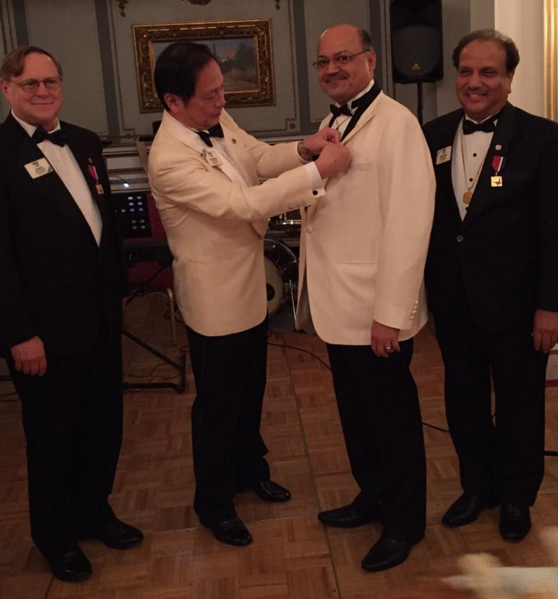

 Leadership
Leadership

Dr Manoj has served in various capacities as a Lion member:
Global Lion
- LCIF Trustee, 2021-2023
- GAT CA8 CA Leader, 2019-2023
- GAT CA8 CA Leader, 2017-2019
- Member of Lead Gift Committee – Campaign 100, 2019-2022
- Board Appointee, 2011-2012.
- Board Appointee, 2015-2016
- LCIF Trustee, 2015-2016
- International Director, 2005-2007.
- Campaign SightFirst II National Coordinator, 2005-2008
District Level Offices
- District Honorary Committee Chairperson, 2012-2013
- District Leadership Development Chairperson, 2003-2007
- District Governor, 2000-2001
- Vice District Governor, 1999-2000
- District Sight First Chairperson, 1994-1997
- Region Chairperson, 1997-1998
- Cabinet Secretary, 1996-1997
- Zone Chairperson, 1995-1996
Club Level Offices
- Club Membership Chairperson Since 2007
- Club President 1993-1994
- Club Secretary 1990-1992
Multiple District Level Offices
- Multiple District LCIF Chairperson, 2007-2008
- Multiple District Membership Chairperson, 2004-2005
Additional Lion Activities
- GAT Africa Coordinator, 2018-2019
- LCIP Certified 2017
- Member Of International Ad- Hoc Committee On Diabetes, 2016-2017
- Member Of International Ad- Hoc Committee On Youth And Leos, 2016-2017
- GMT CA Leader, 2013-2017
- GMT Group F – Area 6 Leader, 2011-2013
- GMT CA 6 Vice CA Leader, 2010-2013
- Co-Chairperson of The Euro-Africa Committee, 2006-2018
- Chairperson of The Africa Steering Committee, 2007-2017
- Africa Membership Team Extension Member, 2008-2010. (Membership Development Committee)
- DGE Schooling Group Leader, 2011, 2015, 2017, 2018, 2019.
- Chairperson Planning Committee Lions Day with UN In Nairobi, Kenya 2011, 2018, 2023.
- Member of the Impact Team 2001-2003.
- Member of the Euro - Africa Committee.